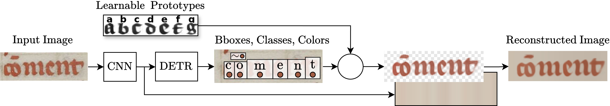
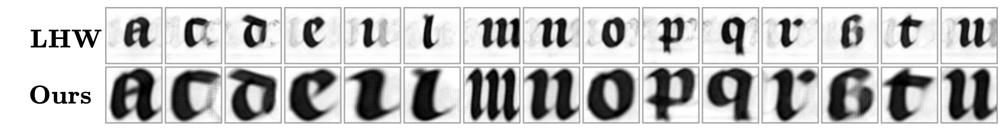
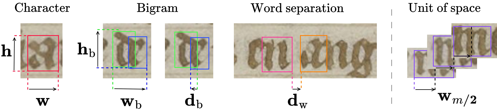
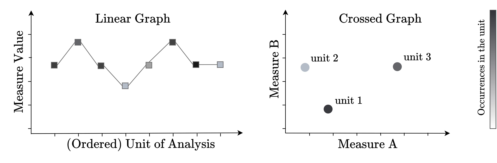
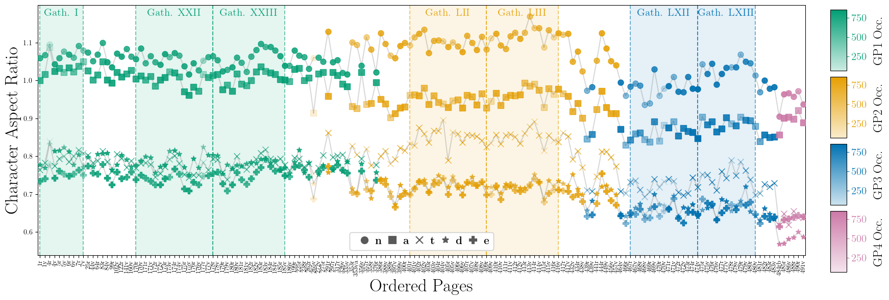
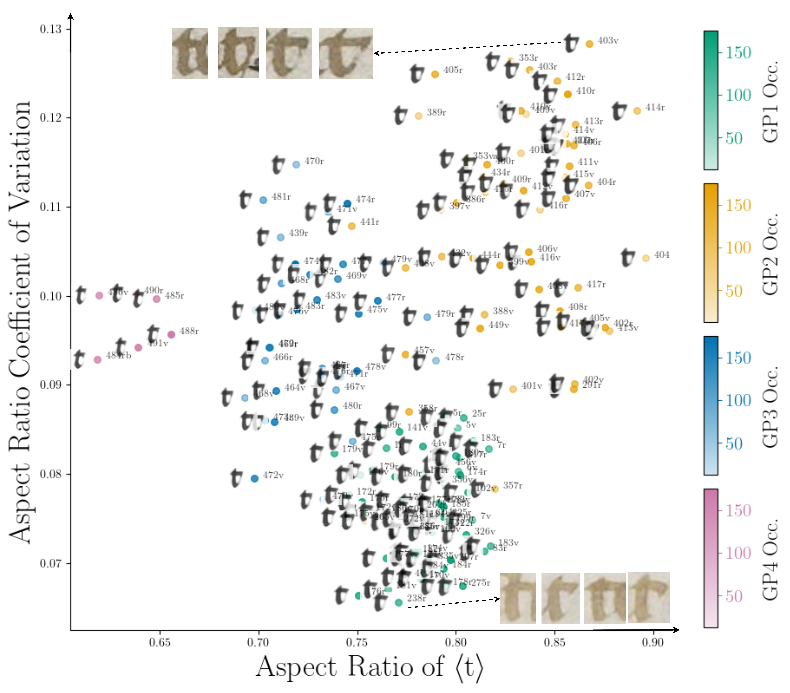

Leveraging Morphology for Historical
Script Metrological Analysis
 Dataset
Dataset
Paleographic analysis — the study of historical handwriting — still relies heavily on expert eye and subjective comparison. Computational approaches have made progress in recognizing text and extracting character shapes (morphology), but they rarely produce the kind of quantitative measurements (metrology) that are needed for reproducible, large-scale study.
-
Contributions:
- We bridge morphological and metrological paleographic analysis by defining measurements based on character prototype alignments, opening the way for more consistent and scalable metrological analysis;
- we introduce an architecture and training strategy that brings together detection-based character recognition and prototype-based modeling, which improves results, stability, efficiency, and enables our paleographic measurements;
- we demonstrate the effectiveness of our approach through a case study, outlining its potential for fine-grained analysis and discovery beyond hand recognition.
Detection-based approach to prototypical text line modeling
Our architecture reconstructs text line images from learned character prototypes, to predict character bounding boxes and class labels directly from a line image, using only line-level transcriptions as supervision. We add a reconstruction module to extract character prototypes and reconstruct text lines.

Prototype quality
We compared our approach to the Learnable Handwriter (LHW), showing improved prototype quality as well as deformable prototypes.

From bounding boxes to paleographic measurements
Because bounding boxes are defined by the optimal alignment between a prototype and a specific character instance they are consistent across the whole dataset. From character bounding boxes we derive the following measures: character aspect ratio w/h; inter-character distance (bigrams) db its aspect ratio wb/hb; and inter-word distance dw. We normalize by a unit of space to keep measurements independent of image resolution.

We compute the mean μ and coefficient of variation CV = σ/μ of each measure across all character instances within a unit of analysis (one page). These two statistics together capture both the central tendency and the executional consistency of a scribal hand. We visualize results using two types of graphs, linear and crossed.

Dataset
Text-line annotations of Paris, BnF, fr. 2813
160 annotated pages (6,808 lines, 279,780 characters) from Les Grandes Chroniques de France (Paris, BnF, fr. 2813), covering four scribal hands (graphic profiles GP1–GP4).
Results — Case study on Paris, BnF, fr. 2813
We apply our method to the dataset and report results on letter proportionality, bigram and word separation. Here some examples of a linear and a crossed graph.
Letter proportionality
Character aspect ratios alone are sufficient to distinguish the four hands across the manuscript.

Executional consistency of ‹t›

Plotting the aspect ratio of ‹t› against its coefficient of variation reveals executional consistency within each scribal hand. GP1 forms a compact cluster with low variability — ‹t› . GP4 clusters similarly but with slightly higher CV. GP2 and GP3 are more dispersed. For GP2, this reflects a habit of elongating the horizontal bar of ‹t› specifically in line-final positions.
References
- Baena, R., Kalleli, S., & Aubry, M. (2024). General detection-based text line recognition. Advances in Neural Information Processing Systems, 37, 42388–42404. [code]
- Vlachou-Efstathiou, M., Siglidis, I., Stutzmann, D., & Aubry, M. (2024). An interpretable deep learning approach for morphological script type analysis. ICDAR 2024, Springer. [code]
- Vlachou-Efstathiou, M. (forthcoming 2026). Interpretable deep learning for palaeographic variability analysis: Revisiting the scribal hands of Charles V's Grandes Chroniques de France. Scriptorium. [project page]
- Siglidis, I., Gonthier, N., Gaubil, J., Monnier, T., & Aubry, M. (2024). The Learnable Typewriter: A generative approach to text analysis.
Cite
@inproceedings{vlachou2026metrology,
title = {Leveraging Morphology for Historical Script Metrological Analysis},
author = {Vlachou-Efstathiou, Malamatenia and Baena, Raphael
and Stutzmann, Dominique and Aubry, Mathieu},
booktitle = {Document Analysis and Recognition -- ICDAR 2026},
publisher = {Springer},
year = {2026}
}
Acknowledgements
This study was supported by the CNRS through MITI and the 80|Prime program (CrEMe — Caractérisation des écritures médiévales), and by the European Research Council (ERC project DISCOVER, no. 101076028). This work was granted access to the HPC resources of IDRIS under the allocation AD010614956R1 and AD011015222 made by GENCI.